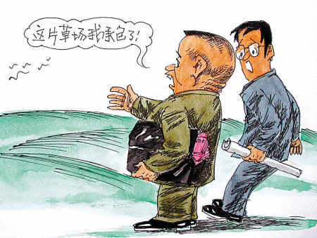

1. Little Fresh Meat
You know what a "shota" is, right? You know what a handsome guy is, right? You know what "first love awakening" is, right? You know what "inexperienced in the world" means, right? Well, as long as you know. Now add handsome features, a muscular build, and smooth, tender skin – and there you have it: "little fresh meat."
To put it plainly, "little fresh meat" refers to "boys between 12 and 25 years old who are pure in nature, have simple relationship histories, little emotional experience, and are handsome and beautiful (in Baidu's words)."
2. Meng Meng Da (So Cute)
It means "moe" (adorable), and is an internet buzzword. It evolved from the internet buzzword "me me da" (mwah) under the influence of Japanese moe culture. It originated in a Douban group, where it meant "it's time to take your medicine" – that is, curing "chuunibyou" (eighth-grader syndrome). It later became popular thanks to Shintani Ai's GIF images. Because of differences in semantic context, "mengmeng da" is often used humorously to describe one's own cute image, while "me me da" is more often used as a term of endearment for others or as a modal particle. It is now widely used on platforms such as Baidu Tieba, QQ, QQ space message boards, Weibo, WeChat, and so on.
3. Xin Sai (Heart Ache)
It is short for "myocardial infarction," but it represents more of an emotion – feeling blocked up in the heart, uncomfortable, an indescribable pain, when unpleasant things around you make you feel bad inside.
4. Bi Ge (Posing Style / "Bigger")
Originally a Chinese homophone translation of the English word "bigger," it now means the style of showing off (zhuang bi). The higher your "bi ge," the higher you are in the pecking order of posers, and the more superiority you gain by comparing yourself with people at lower levels. In fact, "bi ge" and "zhuang bi" are different: the former only provides the ability to show off, but whether you actually choose to show off is another matter. When you don't show off, your "bi ge" cannot be called showing off.
5. Bu Zao (Don't Know)
It is a contracted word formed by rapidly running together or rapidly typing certain common phrases, meaning "bu zhidao" (don't know). In other words, "do you know or not?" In order to express the meaning of common phrases more quickly and conveniently, people run the syllables together in speech or type them quickly, creating a contraction (like a Taiwanese accent), where two syllables fuse into one (usually the initial of the first character merges with the final of the second, similar to fanqie in classical Chinese phonology). It can be said that contracted characters carry both the sound and meaning of the original words.
6. Dou Bi (Goofball)
It means "kind of funny and a little silly/stupid." When used between close friends, it is usually meant as a joke or playful teasing.
7. "Contracting the Fish Pond" Meme
A type of "CEO-style" meme. Its basic sentence pattern is: "I want the whole world to know that this... has been contracted by you." This pattern is a domineering, sovereignty-claiming parody phrase popular on the internet.
It originates from the TV drama "Boss & Me" (Shan Shan Comes), in which Zhang Han, playing a scheming, tsundere CEO, holds Zhao Liying in his arms and delivers the line: "I want the whole world to know that this fish pond has been contracted by you."
8. Picking Up the Soap
When a bar of soap falls on the floor and you bend over to pick it up, you might be attacked from behind by another man (commonly known as "chrysanthemum popping" – uh, a bit explicit). It is now often used to describe a very close bond between brothers/buddies.
9. Last Hit
Also called "bu bing" (last-hitting units), it is a Warcraft III term referring to the technique of landing the final attack to kill a minion.
Later, it came to refer broadly to the act of earning gold by landing the last hit on creeps in real-time multiplayer battle games such as DOTA.
On some social networks, it is also used to mean giving someone the final blow when putting them down.
10. How to Solve It (Zen Me Po)
A colloquial phrase meaning "what should I do?" It is also a playful way of saying "how to crack/deal with it."
11. Zhang Zi Shi (Gaining Knowledge)
"Zhang zi shi" roughly means "expanding one's knowledge" (a humorous play on "zhang zhishi"). It is said this way simply to avoid being too serious and to keep things more relaxed. Another reason is that many people use pinyin input methods and tend to pick whatever character appears near the top of the candidate list. For example, "yali da" (stress is high) becomes "yali da" (the duck pear is big), and "yuanlai ruci" (so that's how it is) becomes "yuanlai rucha" (it turns out to be as thin as firewood), and so on.
12. You Can You Up
It means you should respect other people's achievements and efforts, and not casually deny them. If you're so capable, go ahead and try it yourself – you might be even worse than they are!
"You can you up" is a catchphrase that came out of arguments among basketball fans. Its meaning is very clear, and so is the point of mockery. It is rendered in English as "You can you up," with the corresponding phrase "No can no bb."
13. Ye Shi Zui Le (I'm Speechless)
A mild way of expressing helplessness, frustration, or speechlessness. It usually indicates that a person or thing is impossible to reason with, impossible to communicate with, or not even worth criticizing. It can often be used interchangeably with "speechless," "can't understand," and "unable to mock."
14. Slipped Hand
"Slipped hand" originally means an operational mistake caused by carelessness. As internet slang, it refers to doing something deliberately and then claiming it was an accident.
For example: when fans attacked Liu Shishi, Nicky Wu (Wu Qilong) "liked" the Weibo post, and later explained that his hand had slipped.
15. Ming Ming Bing (The "Clearly Know Better" Disease)
"Ming ming bing" is a new internet term. It is not an actual disease, but it is quite common. It simply gives a name to people's daily inertia and laziness under the pressures of life and work.
For example, you clearly know you should lose weight, yet you can never resist the temptation of good food; you clearly know you should work hard, yet you still muddle along. Sometimes there are things you clearly know you shouldn't do, but your hands itch, your brain goes numb, and you just can't hold back. Many netizens relate to these symptoms and call this condition "the most high-end incurable disease of 2014."
16. Ye Shi Man Pin De (Pretty Hard-Going)
It means "quite hardworking." But it implies that even though you tried very hard, you still didn't succeed, giving it a slightly ironic flavor.
It was originally a very simple colloquial phrase. Gary Chaw (Cao Ge) mentioned it many times on "Dad, Where Are We Going? 2," which helped it gain tremendous popularity and spread widely across the internet.
17. Quietly Be a Handsome Man
This is a modifier-head phrase; the emphasis is on "quietly." It means: "A handsome man like me just needs to live quietly – no need to stir up trouble or ask for suffering." Besides being an internet parody, this phrase can also serve as an identification tag for people with moderate to severe "straight-man cancer" (netizens' term for mocking people who live in their own worldview, values, and aesthetics and constantly show others their contempt and dissatisfaction) and for narcissistic personalities.
It is the catchphrase of Tang Seng, played by "Professor Yi Xiaoxing" in the first episode of Season 2 of "Unexpected" (Wan Wan Mei Xiang Dao). The full line is: "I think I'll just quietly be a handsome man after all."
18. Don't Mess With Me!
It means: leave me alone, don't talk to me, don't touch me, don't provoke me, etc.
Popular examples include "Yang yang yang, don't mess with me" and "Yang Yangyang, don't mess with me."
Origin: "Don't mess with me" comes from a line said by Yang Yangyang in "Dad, Where Are We Going? 2," in the episode aired on July 25, 2014.
19. Keep Going and Cherish It (Qie Xing Qie Zhen Xi)
On March 31, 2014, Ma Yili responded on Weibo to Wen Zhang's affair scandal: "Falling in love is easy, but marriage is not. Keep going and cherish it." The phrase then went viral online, sparking a wave of collective creations from netizens:
Eating is easy, losing weight is not. Eat on, and cherish it.
Sneaking around is easy, being promoted to the official spouse is not. Keep going, and cherish it.
20. Cannot Bear to Look (Bu Ren Zhi Shi)
"Bu ren zhi shi" refers to overly exposed images on the internet, or very tragic events, that make people feel uncomfortable rather than pleased when they see them – they can't bear to keep staring, and their gaze cannot linger.
In real life, it can also carry the sense of being shy or embarrassed.
It is often used to describe things or behaviors that are particularly shocking, disgusting, etc.
21. Does Your Family Know?
It carries a mocking connotation. According to online lore, it originated from a Douban netizen roasting a Photoshopped selfie: "You're so beautiful – does your family know?" It has a sarcastic tone. Then it spread by word of mouth, and "Does your family know?" quickly became an internet catchphrase. The phrase's potential for development and expansion has also given netizens endless inspiration for mockery.
22. No Zuo No Die (Don't Court Death)
Also said as "NO ZUO NO DIE," it means going out of your way to court trouble and ending up with bad luck. It is now widely popular across major communities, forums, and even mainstream media.
23. Which School Has the Strongest Excavator Technology?
It was originally an enrollment slogan for Lanxiang Technical School. It first appeared sporadically in NetEase comment sections and Baidu Tieba, and later evolved into an internet catchphrase. "Which one has strong excavator technology" became one of the most frequently used memes among joke writers for a period, and evolved into various genres online, such as classical Chinese style and academic style. It later evolved into "So the question arises: which school has the strongest excavator technology?" which made the phrase applicable in even more contexts.
24. Rich, So Willful
It originated from an old man getting scammed. He knew the other person was a con artist, but he wanted to see exactly how much the scammer could take him for – until the scammer was caught by police after taking 500,000 yuan! After this story was reported, netizens commented: "Because he's rich, he's willful."
25. Go to the Rooftop
"Go to the rooftop" is a new internet term that emerged during the 2014 World Cup, meaning to jump off a building. It refers to people who bet their entire fortunes on football lottery tickets, and then, after an upset result left them penniless, they get the urge to go up to the rooftop and jump. But it is more of a joke; those who actually jump are rare.
26. Danmaku (Bullet Comments)
Pronounced "dan mu," it originally means a dense barrage of gunfire.
When watching online videos or live TV broadcasts, if a flood of comments streams across the screen, the effect resembles the bullet barrages in shooting games, so this mass comment effect is called "danmaku." But usually it isn't enough simply to have a lot of comments – there tends to be a common theme, or everyone tacitly posts the same comment together.
27. Fa Kai Xin (Not Happy)
"Fa kai xin" describes a person who is feeling unhappy and acts cute and whiny in front of their lover, seeking comfort. It has become the hottest term for acting coquettish these days.
28. Jian Chai Zhuang Si (Life Is Hard, Don't Expose Everything)
A new internet term. It is the abbreviated form of: "Life is inherently difficult; don't expose everything; if you keep posing again, I'll certainly chop you to death!"
"Jian chai zhuang si" mostly appears on public community platforms such as Baidu Tieba, Weibo, and forums, and is mostly an expression of dissatisfaction with the content posted by the thread starter.
29. Brain Hole Wide Open (Wild Imagination)
"Brain hole" is a word derived from "brain supplementation" (脑补). The bigger the brain hole, the more you can fill in. Brain supplementation means completing in your mind. It's a term used in anime and manga. It usually refers to mentally supplementing certain plot points, imagining in your head plot developments from manga, novels, and real life that you wish had happened but didn't. "Brain hole wide open" means the same as brain supplementation.
"Brain hole wide open" also carries the meaning of wishful thinking and letting your imagination run wild.
"Brain hole wide open" means adding new knowledge to your brain, which can help you level up.
30. Scared pissless
It is an exaggerated expression meaning something is terrifying. When a person or animal is so frightened that they lose control of their bladder, they involuntarily pee.
Click me to share notes
<p style="font-size:14px;">The note must be an extension of this article's content!</p><br> <p style="font-size:12px;"><a href="../tougao.html" target="_blank">To submit an article, click here</a></p> <p style="font-size:14px;"><a href="./runoob-user-test-intro.html" target="_blank">How to get a registration invitation code</a></p> <h3 class="text-muted"><i class="fa fa-info-circle" aria-hidden="true"></i> Before sharing notes, you must <a href=".." class="runoob-pop">log in</a>!</h3> <p><a href="./runoob-user-test-intro.html" target="_blank">How to get a registration invitation code</a></p>